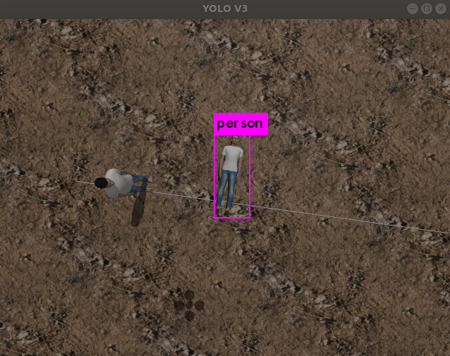

Projects
Most of my technical work is contained on my GitHub. These are some of the projects that I have recently worked on.
Modern C++ Course (In progess)
This is a part of my recent endeavour in making Youtube videos. The aim of ths series is to introduce modern C++ and then delve into some cool projects.
A multi UAV system to assist with search and rescue operations in disaster affected regions
I had a lot of fun working on multi robots last semester. For our final project of Multi Robot Systems, me and Yash Mandlik developed a multi UAV system to assist with search and rescue operations in disaster affected regions. We used computer vision techniques and object detection (YOLO) to detect missing or stranded humans. Specifically we used YOLO ROS author: Marko Bjelonic) for our object detection task since it easily wrapped around our ROS framework. All the attractive (formation) and repulsive (obstacle avoidance) potential functions were designed and tuned fully using MATLAB.
